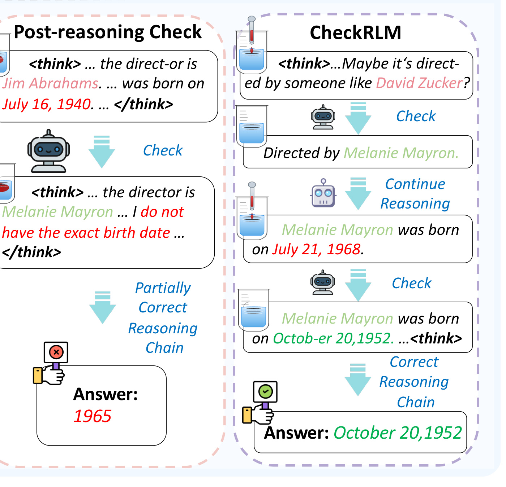
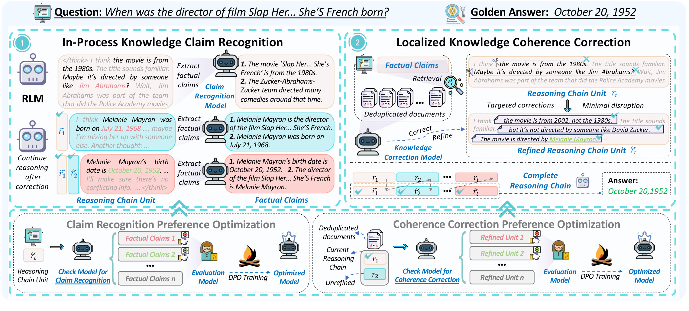
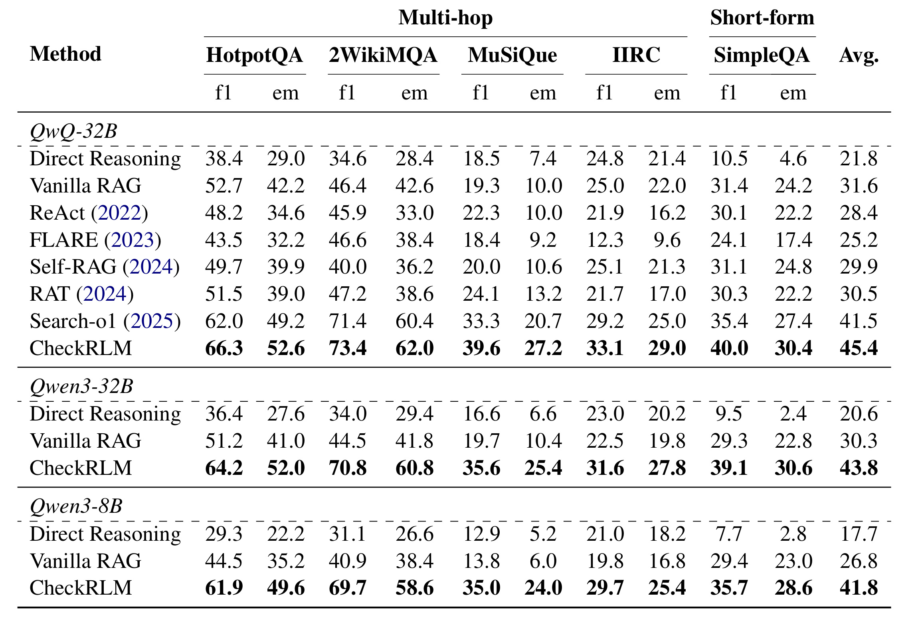
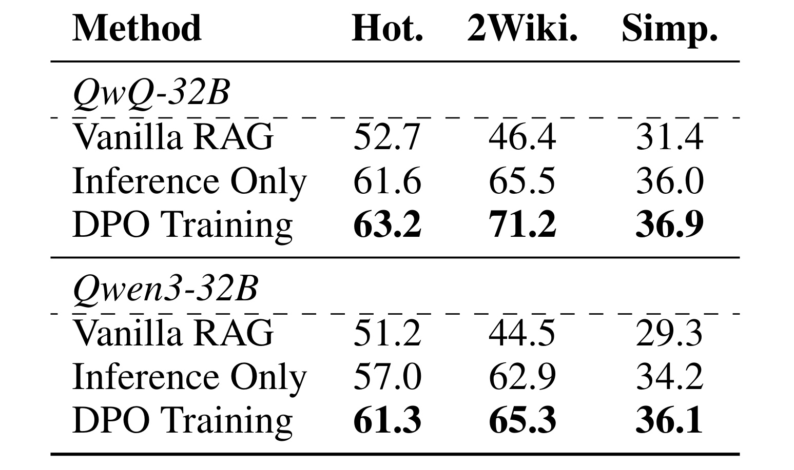
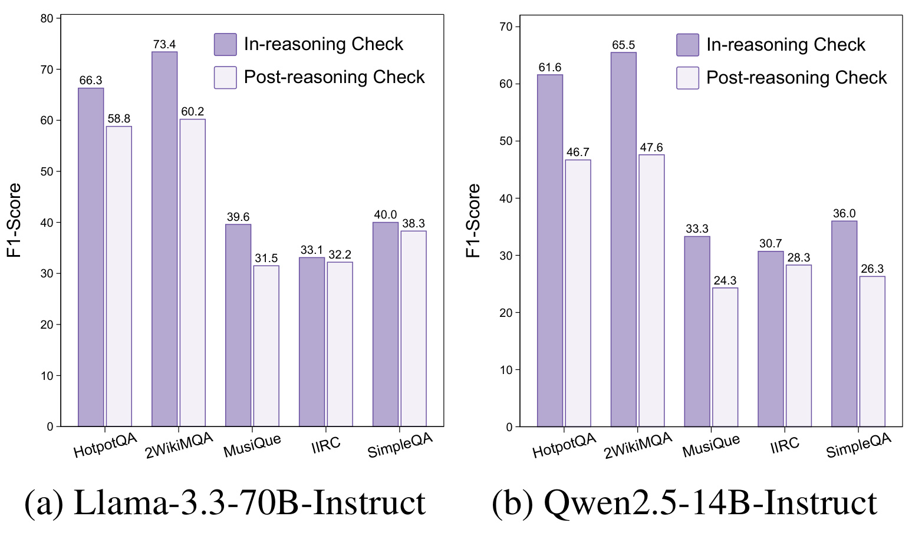
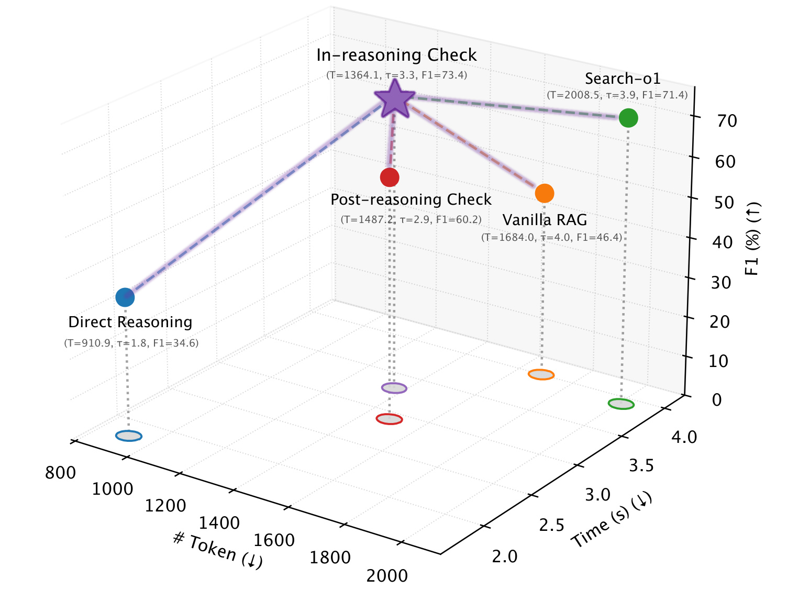
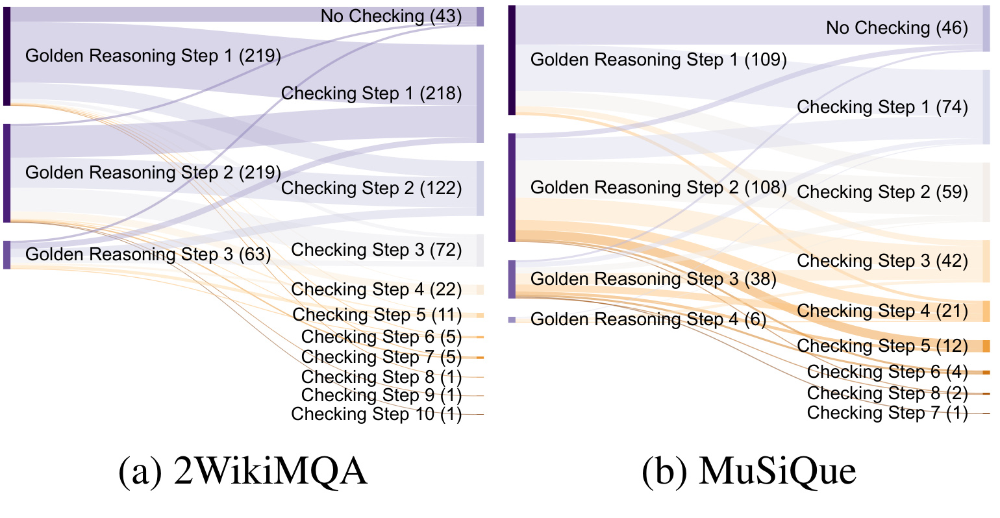
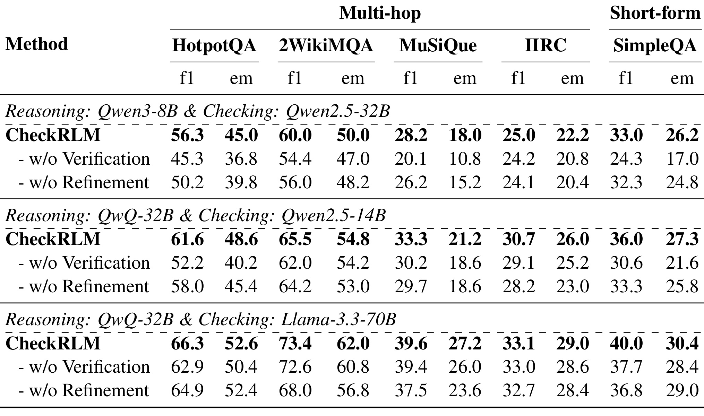

CheckRLM：面向检索增强推理的知识-思维一致性检查
[toc]
这篇论文关注一个很具体但很容易被 RAG 系统忽略的问题：推理语言模型在多跳问答和知识密集任务中会把内部事实记忆写进长 reasoning chain，而这些事实一旦错了，后续每一步都会把它当作前提继续推。CheckRLM 的作者来自北京师范大学、中国科学院信息工程研究所、中国科学院大学、清华大学和东北大学，论文入口是 arXiv:2607.02262。PDF 首页核验到代码与数据仓库：AI9Stars/CheckRLM。本文的核心贡献不是再做一次更大的检索，而是把“知识是否和当前思路一致”这件事放进推理过程内部，在错误尚未累积前做局部识别和最小修正。
长链推理让 RLM 在复杂任务上更强，但也让每个中间事实都变成后续推理的前提；一旦某一步的内部知识出错，错误会沿着 reasoning chain 累计放大，即使用事后检查看到整条链，也可能已经无法修复被污染的中间推理。
1. 背景和问题
RLM 的优势来自更长的推理链。模型不再直接给答案，而是把复杂问题拆成若干中间状态，在每一步中尝试回忆事实、补足关系、反思前一步是否合理，再生成下一段推理。这个机制在数学、代码和多跳问答里很有效，因为复杂任务往往需要显式分解。但论文指出，知识密集任务和纯逻辑任务最大的差别在于：中间步骤不是只做符号演算，还会写入实体名、出生日期、导演、组织关系、地点、事件时间等事实。只要其中一个事实来自模型参数记忆并且出错，后续推理就会围绕错误事实继续展开，最终答案即便形式上推得很完整，也可能偏离真实世界。
Vanilla RAG 只能部分缓解这个问题。它通常在回答前检索一次，把相关文档放进上下文，然后让模型完整生成一条推理链。问题是，多跳问题里真正需要核验的事实并不总在最初 query 中显式出现。例如问题只问电影导演的出生日期，模型第一步需要先找导演是谁，第二步才需要找出生日期。如果初始检索没有覆盖第二步所需事实，或者模型在第一步把导演记错了，检索材料很难自动纠正后续链路。更进一步，Search-o1、ReAct、Adaptive RAG 这类方法虽然会在推理过程中多次检索，但它们往往把外部知识作为补充上下文插入，而不是针对当前 reasoning unit 中的错误事实做最小替换。论文把这种差异称为知识与思维的一致性问题：外部知识不是越多越好，关键是当前思维链里的事实是否和正确知识保持一致。

Figure 1 的这个局部裁剪专门保留了事后检查和 CheckRLM 的差别。左侧 Post-reasoning Check 已经在后处理阶段把导演从错误候选改回 Melanie Mayron，但它没有拿到或没有修复出生日期，于是最终仍然给出 1965。右侧 CheckRLM 在推理过程中先检查“导演是谁”，把 David Zucker 修成 Melanie Mayron；模型继续推理后又出现了“July 21, 1968”这个生日错误，CheckRLM 再次触发检查，把它改成 October 20, 1952。这个图的重点不是案例本身，而是纠错时机：事后检查面对的是一条已经成型的链，只能在结尾做整体修补；推理中检查面对的是刚产生的局部 reasoning unit，可以在错误成为下一步前提之前处理掉。对长链任务来说，这种差别会随步骤数增长而放大。
因此，本文真正要解决的问题可以拆成三个层次。第一，模型需要知道当前 reasoning unit 中哪些内容是可核验的事实 claim，而不是把整段思考都拿去检索；第二，检索结果进入后不能粗暴扩写整段推理，否则会破坏 RLM 原有的解题路径；第三，识别模型和纠错模型本身也要学会“少而准”，不要输出冗余 claim，不要在无关文档下强行改写。CheckRLM 的设计围绕这三个层次展开：先抽取和问题有关的 factual claims，再用这些 claim 和原始问题检索外部知识，最后只对当前段落中的事实错误做 token-level 的最小修正。它不是把 RAG 变成更重的搜索系统，而是把 RAG 变成推理链的局部一致性检查器。
这个问题对推荐、搜索和个性化系统也有迁移意义。许多线上链路正在把 LLM 用作解释、重排、用户画像推理或工具调用规划器，模型经常需要在多步文本中引用商品属性、用户行为、时间窗口、位置和业务规则。如果第一步把实体或约束记错，后续排序理由或行动计划会越来越像“自洽但错误”的长文本。CheckRLM 的价值在于，它把长链推理的失败模式从“最后答案错了”提前到“当前段落里的事实和可检索知识是否一致”，这个验收点更适合在工程系统中插入监控和局部修复。
2. 方法
2.1 推理链形式化与检查粒度
论文先把 RLM 的推理过程写成一个由中间状态组成的序列。给定问题 q，模型在第 t 步根据前面的推理历史生成当前状态。完整 reasoning chain 不是一个不可分割的长文本，而是可以按自然段或 reasoning unit 分段观察的状态轨迹。这个形式化很重要，因为 CheckRLM 的检查对象不是整个最终答案，而是当前刚生成的局部段落。若检查粒度太细，例如 token 级或单句级，会频繁打断推理语义；若检查粒度太粗，例如等整条链生成完再做 correction，就会退化成 Post-reasoning Check。作者选择 paragraph-level reasoning unit，是在上下文完整性和及时纠错之间取中间点。
符号解释：$R$ 表示完整推理链，$s_t$ 表示第 $t$ 个中间推理状态，$q$ 是原始问题，$s_{<t}$ 是此前所有中间状态，$P_\theta$ 是由 RLM 参数 $\theta$ 决定的条件生成分布。这个公式说明，后续状态依赖此前状态；如果某个 $s_t$ 写入错误事实，它会通过 $s_{<t}$ 影响后续每一步。
符号解释：$a$ 是最终答案，$R$ 是模型已经生成的完整 reasoning chain。最终答案不是孤立采样，而是由问题和整条链共同决定。CheckRLM 要降低最终答案错误率，就不能只看最后一句答案，而要让 $R$ 的每个关键事实尽量在生成过程中保持正确。
2.2 In-Process Knowledge Claim Recognition
第一阶段是 in-process knowledge claim recognition。模型每生成一段 reasoning unit $r_t$ 后，CheckRLM 不把整段长链全量送去检索，而是让识别模型 $M_{rec}$ 从当前段落中抽取与问题求解有关的显式事实 claim。作者特别强调不使用完整历史链 $R_{<t}$ 作为识别输入，是为了避免早期噪声继续污染识别阶段。比如在电影案例里，当前段落里“这部电影由 Jim Abrahams 执导”就是可核验 claim，“标题听起来像八十年代喜剧”则只是推测性上下文，未必应该作为检索和纠错的核心。
符号解释：$y^{\mathrm{claim}}_t$ 是从第 $t$ 个 reasoning unit 抽取出的 factual claim 集合，$M_{\mathrm{rec}}$ 是 claim recognition model，$\mathrm{Instruct}_r$ 是指导模型只抽取显式、相关、非冗余事实的提示模板，$r_t$ 是当前推理段落，$q$ 是问题。这个公式对应的是“定位可检查事实”而不是“直接修正答案”。识别质量越高，后续检索 query 越集中，纠错模型越不容易被无关文档带偏。

Figure 2 展示了 CheckRLM 的完整数据流。左上角是当前 RLM 正在生成的 reasoning unit，识别模型从段落中抽取 factual claims；右上角把这些 claim 与原问题一起检索，得到去重后的外部文档，再由 knowledge correction model 对当前 reasoning unit 做局部修订；下方两个 DPO 区块分别对应 claim recognition preference optimization 和 coherence correction preference optimization。图里最值得注意的是，修正后的并不是一个全新答案，而是 refined reasoning chain unit。也就是说，CheckRLM 让模型沿着原有推理继续走，只是在事实错误出现的位置做小切口修正。这样的设计避免了两种常见失败：一是把检索结果整段塞进链里，导致模型的思路被改写；二是等最终答案错了以后再回头修，已经无法判断哪一步污染了后续推理。
2.3 Localized Knowledge Coherence Correction via Retrieval
第二阶段是 localized knowledge coherence correction。识别阶段给出 claim 后，系统构造检索 query 集合 $Q_t$，其中既包含原始问题，也包含当前段落抽出的 factual claims。这样做的好处是同时保留全局任务意图和局部事实核验目标。原问题提供“最终要答什么”的约束，claim 提供“当前可能错在哪里”的线索。每个 $q_i$ 独立触发检索，结果合并并去重为 $D_t$，再交给 correction model。
符号解释：$Q_t$ 是当前检查步的 query 集合，包含原始问题 $q$ 和 claim 集合 $y^{\mathrm{claim}}_t$；$\mathrm{Retriever}(q_i)$ 表示对某个原子 query 检索 top-k 文档；$D_t$ 是合并去重后的文档集合。这个公式体现了 CheckRLM 的 RAG 视角：检索不是一次性背景补充，而是围绕当前 reasoning unit 动态产生。
拿到 $D_t$ 后，纠错模型 $M_{cor}$ 同时读取当前 reasoning unit 和检索文档，判断段落里的事实是否与外部知识冲突。如果事实正确，或者文档无关，它应保持原段落不变；如果事实错误，它只做必要的 token-level correction。这一步的核心机制是 minimal-cost yet precise correction：修正的是事实，不是重写推理风格；保留的是结构，不是盲目追加检索摘要。
符号解释：$r'_t$ 是修正后的 reasoning unit，$M_{\mathrm{cor}}$ 是 knowledge correction model，$\mathrm{Instruct}_c$ 是要求最小修改、只改事实错误、不追加无关说明的纠错提示，$r_t$ 是当前段落，$D_t$ 是检索后去重的文档集合。这里的关键边界是：纠错模型不能把 retrieved documents 当成补充材料随意扩写；它只在文档能核验错误时修改段落中的对应事实。
符号解释：$\tilde r_t$ 表示第 $t$ 个 reasoning unit 的最终状态，可能是原段落 $r_t$，也可能是修正段落 $r'_t$；$\oplus$ 表示把各段按顺序拼成完整推理链。这个公式说明 CheckRLM 的推理链由一系列“已检查或已修正”的局部单元组成。与 Post-reasoning Check 相比，它不是在最后替换答案，而是在链条内部不断把错误事实从后续前提中剔除。
2.4 两类偏好优化与小规模 DPO 数据
作者没有只依赖 prompt 来做识别和纠错，而是构造了小规模 DPO 数据集来优化同一个 recognition/correction 模型 $M^{\theta}_{RC}$。附录说明，训练数据来自 2WikiMQA 的 2500 个样本，拆成 DKCR 和 DKCC 两个子集：前者训练 claim recognition，后者训练 knowledge coherence correction。识别数据要求 claim list 相关、具体、无冗余；纠错数据要求结构完整、只做精准修正、避免无意义前缀或追加说明。这个设计和方法目标是一致的，因为 CheckRLM 最怕的不是“查不到资料”，而是识别出一堆无关 claim，或者纠错模型把一段推理改成另一段冗长解释。
符号解释：$M^{\theta}_{\mathrm{RC}}$ 是可训练的识别/纠错模型，$M^{\mathrm{ref}}_{\mathrm{RC}}$ 是参考模型，$x$ 是当前训练输入，$y^+$ 是偏好的高质量输出，$y^-$ 是不偏好的输出，$D$ 是偏好数据集，$\beta$ 控制偏好约束强度，$\sigma$ 是 sigmoid 函数。DPO 的作用不是发明新奖励函数，而是让模型在同一输入下更倾向于简洁、准确、结构保留的输出。对本文来说，这比普通监督学习更贴合任务，因为“不要改”和“只改一点”本身就是一种偏好判断。
从训练和推理差异看，CheckRLM 的训练阶段主要优化 $M_{rec}$ 和 $M_{cor}$ 的输出偏好；推理阶段则把优化后的模型插入 RLM 的生成循环。RLM 仍然负责继续推理，CheckRLM 负责在必要时核验和修正当前段落。这种分工让框架可以和不同 reasoning backbone 组合，例如论文实验里用 QwQ-32B、Qwen3-32B、Qwen3-8B 等作为 RLM，用 Llama-3.3-70B-Instruct、Qwen2.5-14B-Instruct 等作为识别和纠错模型。它的风险也在这里：如果检索器没有召回正确知识，或者纠错模型把无关文档当成证据，局部修正就可能变成新的噪声源。 因此作者在 prompt 和 DPO 里反复约束“不相关就不改、正确就不改”。
3. 实验结果
3.1 设置与主结果
实验覆盖四个 multi-hop QA 数据集和一个 short-form QA 数据集。HotpotQA、2WikiMQA、MuSiQue、IIRC 都要求模型跨文档或跨实体完成多跳推理，SimpleQA 则更接近短事实问答。指标使用 F1 和 EM。Baselines 包括 Direct Reasoning、Vanilla RAG、ReAct、FLARE、Self-RAG、RAT 和 Search-o1。实现上，作者设置最大上下文 16,384 tokens，多跳数据同时用 BM25 和 bge-large-en-v1.5，短问答使用 bge-large-en-v1.5，top-k 固定为 3，最多执行 10 次识别和纠错。

Table 1 是本文最重要的性能证据。以 QwQ-32B 为 reasoning backbone、Llama-3.3-70B-Instruct 为识别和纠错模型时，Direct Reasoning 的平均 F1 是 21.8，Vanilla RAG 提到 31.6，Search-o1 进一步到 41.5，而 CheckRLM 达到 45.4。更关键的是复杂多跳数据上的差距：2WikiMQA F1 从 Vanilla RAG 的 46.4 提升到 CheckRLM 的 73.4，MuSiQue 从 19.3 提升到 39.6。换成 Qwen3-32B 和 Qwen3-8B，CheckRLM 仍然明显高于 Direct Reasoning 和 Vanilla RAG。这说明收益不是某一个 backbone 的偶然现象，而是和推理中事实检查机制相关。表格也显示 SimpleQA 上 CheckRLM 仍有收益，但相对多跳任务没有那么夸张；这符合论文动机，因为短事实问答往往只需一次检索，错误累积空间更小。
3.2 DPO 训练和检查时机
作者接着验证两件事：DPO 是否真的改善识别/纠错模型，以及推理中检查是否比事后检查更有效。Table 2 用 Qwen2.5-14B-Instruct 作为 recognition/correction model，在 HotpotQA、2WikiMQA 和 SimpleQA 上比较 Vanilla RAG、Inference Only 与 DPO Training。这里的 Inference Only 表示只用 CheckRLM 推理流程但不经过 DPO 优化；DPO Training 则加入偏好优化后的模型。

Table 2 的结论很直接。QwQ-32B 上，Inference Only 已经比 Vanilla RAG 高很多：HotpotQA 从 52.7 到 61.6，2WikiMQA 从 46.4 到 65.5，SimpleQA 从 31.4 到 36.0；DPO 后进一步到 63.2、71.2、36.9。Qwen3-32B 上也有同样趋势，尤其 HotpotQA 从 57.0 到 61.3，2WikiMQA 从 62.9 到 65.3。这个表说明，CheckRLM 的主收益来自推理中识别和纠错流程，但 DPO 能把输出质量再往上推。更细地看，DPO 的价值不只是“提高分数”，而是把 claim list 和 corrected reasoning unit 都推向更可控的形式：claim 更少冗余，修正更少打断原链。

Figure 3 直接比较 Post-reasoning Check 和 In-reasoning Check。使用 Llama-3.3-70B-Instruct 作为 checker 时，五个数据集上 in-reasoning check 都高于 post-reasoning check：HotpotQA 是 66.3 对 58.8，2WikiMQA 是 73.4 对 60.2，MuSiQue 是 39.6 对 31.5。换成 Qwen2.5-14B-Instruct 后差距更明显，HotpotQA 是 61.6 对 46.7，2WikiMQA 是 65.5 对 47.6。这个图把本文的核心论证从案例推进到统计结果：如果等整条推理链结束再检查，即使能看到完整链，也只能修补一部分错误；如果在 reasoning unit 产生后立即检查，错误还没有成为后续推导的隐含前提，纠错收益会更稳定。
3.3 成本、纠错行为与模块消融
性能提高如果完全依赖更多检索和更长上下文，在工程上未必划算。因此作者把 token、时间和 F1 放到同一张图里比较。Figure 4 使用 QwQ-32B 做 reasoning model、Llama-3.3-70B-Instruct 做 checker，在 2WikiMQA 上比较 Direct Reasoning、Vanilla RAG、Search-o1、Post-reasoning Check 和 In-reasoning Check。

Figure 4 说明 CheckRLM 的效率论点并不是“花更多 token 得到更高 F1”。Direct Reasoning 只用约 910.9 tokens 和 1.8 秒，但 F1 只有 34.6；Vanilla RAG 提升到 46.4，却消耗 1684.0 tokens 和 4.0 秒；Search-o1 达到 71.4，但 token 到 2008.5。In-reasoning Check 的 F1 是 73.4，同时 token 是 1364.1，时间是 3.3 秒。它比 Search-o1 更高分、更少 token，也比 Post-reasoning Check 的 60.2 更有效。这个结果支持作者关于 minimal correction 的判断：如果及时修正错误事实，模型不需要在错误前提上继续展开冗余推理，也不需要通过更深搜索来补救已经偏掉的链路。

Figure 5 解释了“及时”到底发生在第几步。左侧 2WikiMQA 中，Golden Reasoning Step 1 和 Step 2 都有大量样本在 Checking Step 1 或 Step 2 被命中；右侧 MuSiQue 更复杂，有四个 golden reasoning steps，但主要流量仍集中在 Checking Step 1 到 Step 4。换句话说，CheckRLM 并没有退化成反复后验修补，它多数时候在早期就把事实错误拦下来。这个图也能帮助理解为什么 Table 1 中 MuSiQue 收益大：MuSiQue 的组合推理更复杂，错误如果晚发现会污染更多后续状态；早期 correction 能减少这种连锁效应。需要注意的是，图中仍有 No Checking 分支，说明框架并不是每个样本都能找到可修正点，检索和识别召回仍然是边界。

Table 7 是附录里的 constrained ablation。因为 claim recognition 和 coherence correction 彼此依赖，作者不能简单完全删除某个模块，而是用最简版本来观察性能变化。表中三组 reasoning/checking 组合都显示 CheckRLM 完整版优于去掉 verification 或 refinement 的版本。以 QwQ-32B 和 Llama-3.3-70B 为例，完整 CheckRLM 在 2WikiMQA 上是 73.4 F1，去掉 verification 后为 72.6，去掉 refinement 后降到 68.0；SimpleQA 上完整版本是 40.0，去掉 verification 是 37.7，去掉 refinement 是 36.8。这个结果说明两个子模块不是装饰关系：没有 verification，系统难以稳定定位需要核验的事实；没有 refinement，系统即使知道有问题，也不能把当前段落改回可继续推理的状态。
附录还补充了几个有价值的边界结论。Table 8 显示，把 retrieved summary 直接注入 reasoning chain 会降低性能，原因是额外信息可能干扰 RLM 原本的解题逻辑，甚至在无关文档时让模型以为问题不可解。Table 10 显示 bge-large-en-v1.5 通常优于 BM25，但 CheckRLM 在两类检索器下都能超过 Direct Reasoning 和 Vanilla RAG。Tables 13 到 15 的案例进一步说明，Post-reasoning Check 即使纠正导演，也可能因为没有补上生日事实而失败；In-reasoning Check 则先把导演改成 Melanie Mayron，再把生日改成 October 20, 1952。综合来看，实验部分最强的证据链是：主结果说明有效，Figure 3 说明时机关键，Figure 4 说明不是纯成本堆叠，Figure 5 说明早期拦截真实发生，Table 7 说明识别和纠错都不能省。
4. 总结
4.1 我的判断
CheckRLM 最有价值的地方，是把 RAG 从“回答前补材料”推进到“推理中校验当前事实”。这对 RLM 很关键，因为长链推理的错误通常不是最后一跳才出现，而是在早期某个实体、日期或关系上偏掉。论文的设计也比较克制：它没有把所有检索结果都塞进推理链，而是先抽取 factual claims，再检索，再做 minimal correction。这种克制让它比很多 retrieval-heavy 方法更适合工程系统，因为线上系统最怕的不是只查得少，而是查得多以后把模型上下文搞乱。
我认为这篇论文的迁移价值主要在三个方向。第一，任何需要 LLM 生成多步解释或行动计划的系统，都可以把 reasoning unit 作为局部验收点，检查其中的实体、时间、属性和规则是否与外部知识一致。第二，推荐和搜索链路可以借鉴 claim extraction，把“当前解释里哪些事实需要核验”显式化，而不是只对原 query 检索。第三，DPO 数据构造思路值得复用：对检查器而言，高质量输出往往是少改、准改、不改无关内容，这类偏好比单纯生成标准答案更重要。
4.2 局限与后续跟进
这篇论文也有清晰局限。其一，CheckRLM 依赖检索器召回，如果 claim query 没有找到正确文档，纠错模型仍然无法可靠修正。其二，claim recognition 的边界很难完全自动化，过少会漏掉错误，过多会把检索变成噪声放大器。其三，实验主要集中在 QA 数据集，尚未证明在开放式 Agent、推荐解释、业务规则推理或长上下文任务中同样稳定。其四，识别和纠错模型本身成本不低，虽然 Figure 4 显示 token 和时间有优势，但真实部署还要计算额外模型调用、检索服务、并发和缓存策略。其五，最小修正的安全性需要继续观察：如果外部知识库过期或冲突，局部 correction 可能把原本正确的推理改错。
后续我会重点跟进三类问题。第一，看代码仓库是否给出完整训练数据构造和推理 loop，尤其是如何分段 reasoning chain、如何判断检查步停止、如何缓存检索结果。第二，看是否有团队把 knowledge-thought coherence checking 扩展到工具调用 Agent，因为工具轨迹里的事实错误和状态错误同样会累积。第三，关注它能否和轻量检索器、事实库版本控制、置信度阈值结合，避免每个段落都触发重模型检查。第四，如果把它放到推荐或搜索业务里，需要重新定义 factual claim 的类型，例如商品属性、用户历史、召回来源、约束条件和排序理由，这会决定检查器是否真正可用。
总体来说，CheckRLM 的贡献不在于提出一个更大的 RAG，而在于提出一个更细的控制点：每段推理都要和可检索知识保持一致。它给长链 RLM 提供了一种中间态质量控制方式，也提醒我们，RAG 系统的关键不只是外部知识能否被取到，还包括这些知识是否在正确的时间、以正确的粒度、对正确的推理片段发生作用。